Как пользоваться приложением «Волны Эллиотта»
Приложение само размечает волны на графике по волновому принципу Эллиотта, показывает сигналы, считает стоп, цель и сколько акций брать, и ведёт виртуальных роботов. Написано для тех, кто никогда не торговал на бирже: всё по шагам, а все графики — настоящие цены Мосбиржи.
📱 телефон Android 💻 программа для Windows
1 Быстрый старт
Три шага — и на экране настоящие котировки Мосбиржи с разметкой волн. Токен брокера — по желанию: без него всё работает на ценах Мосбиржи.
Откройте приложение — цены уже есть
С версии 3.3 приложению не нужен ключ брокера, чтобы показывать графики. Без токена оно берёт цены прямо с сайта Московской биржи. Минус один: цены идут с задержкой примерно 15 минут, а над графиком будет плашка «Цены с Мосбиржи, задержка ~15 мин».
По желанию: вставьте токен брокера «только для чтения»
Токен — это ключ, по которому приложение получает котировки у брокера. С ним цены без задержки, приложение видит ваш портфель, а робот «мой (вручную)» повторяет ваш настоящий счёт. Нужен токен только для чтения: с ним нельзя ни купить, ни продать, ни вывести деньги.
- В личном кабинете брокера на сайте найдите настройки инвестиций и раздел «Токены API» (если он есть).
- Создайте новый токен и выберите «Только для чтения». Токен с правом торговли не нужен и не подходит.
- Скопируйте токен и перешлите себе на телефон.
- В приложении: ⚙ Настройки → вкладка «Счёт». Нажмите на номера на картинке — увидите, что где.
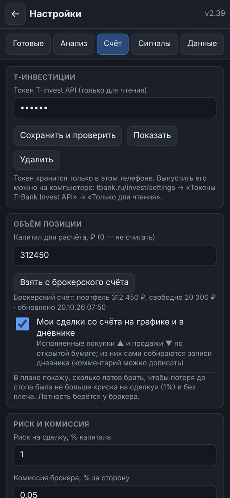
Поставьте готовый набор
Настройки, вкладка «Готовые». Набор — это проверенные на истории 65 акций настройки: какой график смотреть и какие фильтры включить. Для начала нажмите «Поставить» у первого — «Дневки · покупки (основной)».
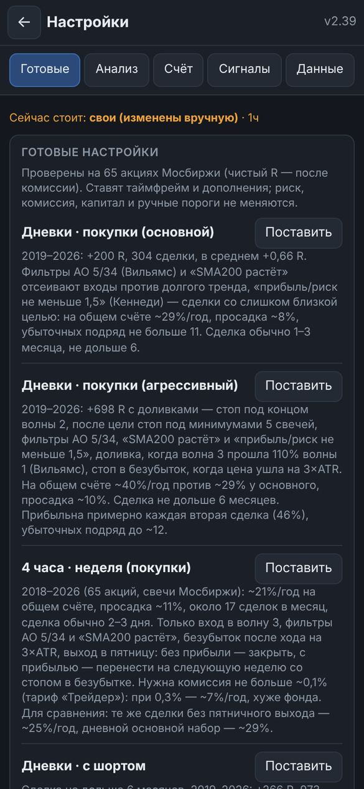
Посмотрите на главный экран
Вернитесь назад кнопкой ←. Это главный экран: сверху бумага и кнопки, посередине график, внизу панель «Сейчас». Нажимайте на номера.
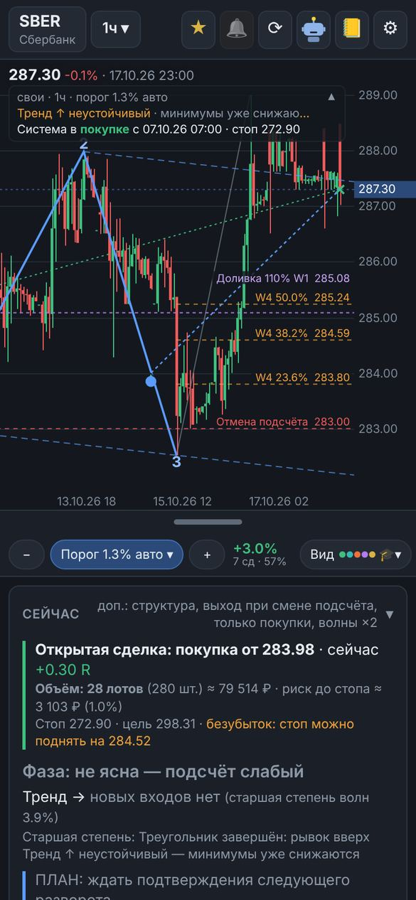
Эта инструкция — в самом приложении
Откройте ⚙ Настройки → кнопка «📖 Инструкция» вверху. Она открывает раздел про ту вкладку настроек, где вы сейчас.
Ещё кнопки 📖 есть на экранах «Роботы», «Мои сделки» и «Сканер», в тренажёре (в «Как пользоваться») и в самом низу панели «Сейчас». Каждая открывает нужный раздел. Кнопка ← или «Назад» на телефоне закрывает инструкцию, а при следующем открытии она продолжится с того же места. «↑ Оглавление» внизу справа возвращает к списку разделов.
Графики и картинки инструкции можно приближать (с версии 3.10): два пальца — раздвинуть, двойное нажатие — приблизить или вернуть, на компьютере — колёсико с зажатой Ctrl. У роликов и вопросов есть кнопки ＋ − ⟲, приближенный график двигается одним пальцем.
Программа для компьютера (Windows)
С версии 3.6 то же приложение есть для Windows. Ставится файлом «Установить.cmd», а новые версии — файлом «Обновить.cmd». Если окно шире обычного, график стоит слева на всю высоту, а панель «Сейчас» справа.
- Крестик не закрывает программу, а сворачивает её к часам. Значок программы — рядом с часами Windows. Выйти совсем — правой кнопкой по значку → «Выход». Там же галочка «Запускать вместе с Windows».
- Пока программа открыта или свёрнута к часам, она проверяет сигналы и роботов каждые 5 минут и сразу после закрытия свечи. Когда компьютер выключен или спит, проверок нет.
- Перенести роботов, сделки и настройки с телефона: на телефоне ⚙ → «Данные» → «Перенос на другое устройство» → «Выгрузить в файл». Файл из «Загрузок» перешлите на компьютер, а в программе там же нажмите «Загрузить из файла». Токен и номер счёта не переносятся: их вводят на каждом устройстве.
2 График и свечи — с нуля
Если вы никогда не смотрели на биржевой график, начните отсюда. Пять минут — и свечи станут понятны.
Акция — маленькая доля компании
Её покупают и продают на Московской бирже. Цена зависит от того, сколько люди готовы платить прямо сейчас, поэтому меняется каждую минуту.
Свеча — цена за отрезок времени
Робот «4 часа · неделя» смотрит на свечи по 4 часа: одна свеча рассказывает, что было с ценой за 4 часа торгов. Дневные роботы смотрят на свечи по одному дню. У каждой свечи четыре цены:
Зелёная — за это время цена выросла: закрылась выше, чем открылась.
Красная — цена упала: закрылась ниже открытия.
Тонкие хвосты — куда цена доходила, но не удержалась.
Посмотрите, как растёт график
Нажмите ▶ — из свечей вырастет график Сбербанка за две недели: конец ноября и начало декабря 2025 года, настоящие цены.
3 Волны — простыми словами
Цена не идёт по прямой. Ральф Эллиотт заметил, что рост обычно складывается из пяти волн: три шага вперёд и два назад. Приложение ищет эти волны само — по правилам волнового принципа.
Пять волн: 1, 3, 5 вперёд, 2 и 4 — откаты
Откат — это передышка: часть людей забирает прибыль, цена немного снижается, потом движение продолжается. Пять волн вместе называют импульсом.
Волна 3 обычно самая сильная
Поэтому роботы чаще всего покупают в начале волны 3 — когда волны 1 и 2 уже видны, а откат закончился.
Три главных правила
Если хоть одно нарушено — это не импульс, и подсчёт неверный:
- волна 2 не опускается ниже начала волны 1;
- волна 3 не самая короткая из волн 1, 3 и 5;
- волна 4 не заходит на уровень цен волны 1 (кроме клина).
В роликах ниже эти правила появляются галочками ✓, как только программа насчитала пять волн.
После пяти волн — откат из трёх: A, B, C
Это коррекция. Бывает и боковая фигура из пяти волн A-B-C-D-E — треугольник, о нём в разделе 5.
Импульсы на настоящих графиках
В учебнике всё гладко. На настоящем рынке — нет: волны кривые, откаты рваные, и приложение по ходу дела несколько раз перестраивает подсчёт, пока картина не сложится. Ниже — четыре реальных случая с Мосбиржи: дневные свечи, а разметка — ровно та, которую приложение видело на каждой свече (будущего оно не знает).
Порог разворота: какие волны считать
Прежде чем считать волны, программа решает, какие движения вообще считать волной. Для этого есть порог разворота — число в процентах под графиком (например, «3,9%»).
Что это такое
Программа идёт по свечам и ждёт, когда цена развернётся от последнего максимума или минимума больше чем на порог. Только тогда она ставит точку разворота. Всё, что меньше, — «шум» внутри волны, его она не замечает. Точки соединяются ломаной линией — это и есть заготовка для подсчёта волн.
- Маленький порог — точек много, видны мелкие волны. Подсчёт быстро меняется, сигналов больше, но много ложных.
- Большой порог — точек мало, видны только крупные волны. Подсчёт спокойный, но сигналы запаздывают и их мало.
Порог и риск
Риск одной сделки от порога не зависит. Количество акций программа считает так, чтобы при срабатывании стопа счёт потерял заданный процент (у роботов — 1,5% или 1%). Меняется другое:
- Низкий порог — волны мелкие, стоп близко к цене. Акций покупается больше, но потеря на стопе та же. Зато ложных сигналов больше: мелкий разворот часто оказывается шумом, и стоп выбивает обычным колебанием цены. Стопов подряд бывает больше — просадка счёта глубже. Цели близко, прибыль на сделку маленькая, и комиссия съедает заметную её часть.
- Высокий порог — сделок мало, стоп далеко, входы запаздывают; деньги чаще лежат без дела.
Итог: одна сделка не опаснее, а торговля в целом нервнее и в среднем хуже. На истории 65 акций мелкий порог (меньше 0,6 от «Авто») на часовых свечах в среднем давал убыток. Поэтому роботы работают на «Авто».
Один график — три порога
Лукойл, дневные свечи, август 2023 — май 2024. Переключайте вкладки: свечи те же, меняется только порог. Серые точки — развороты, которые программа увидела при этом пороге, синяя линия — её подсчёт волн в конце.
Кнопки под графиком
- «Авто» — порог подбирается сам: берётся обычный размах свечи этой бумаги за последние 300 свечей и умножается на 2,5. Так у спокойной бумаги порог меньше, у резкой — больше. Наборы и роботы всегда работают на «Авто» — именно так их и проверяли на истории.
- − и + — уменьшить или увеличить порог вручную. Число загорается не на «Авто», и приложение запоминает его для этой бумаги и таймфрейма.
- «Лучший R» — перебрать 9 порогов вокруг «Авто» на истории этой бумаги и поставить тот, где сделки в среднем дали больше всего R. «Макс. %» — то же, но по доходности счёта. Ниже появится табличка со всеми порогами.
Порог в тренажёре
С версии 3.9 порог можно менять прямо во время тренировки: кнопки − / + / «Авто» в карточке «Порог и бэктест». Это меняет порог только в тренажёре — на обычном графике остаётся ваш прежний порог. Удобно, чтобы посмотреть, как одна и та же история выглядит с мелкими и крупными волнами. Смена порога записывается в журнал тренажёра.
4 Сигнал и ведение сделки (дневки)
Четыре настоящие сделки агрессивного набора из истории — удачная, убыточная, «в ноль» и сложная. Всё посчитано тем же движком, что в приложении: вход, стоп, цель, доливка, безубыток и выход. Фиолетовая линия — подсчёт, по которому открыта сделка; серая — как приложение видит волны сейчас.
5 Роботы: «4 часа · неделя», «Охотник» и «треугольник»
Роботы — это виртуальные счета. Каждый торгует воображаемыми деньгами по своему набору правил и показывает, что сделала бы система. На реальном счёте приложение само ничего не покупает.
Откройте экран «Роботы»
Кнопка 🤖 вверху главного экрана. Внизу — панель роботов: «Все» (обзор) и каждый робот отдельно, в своём цвете.
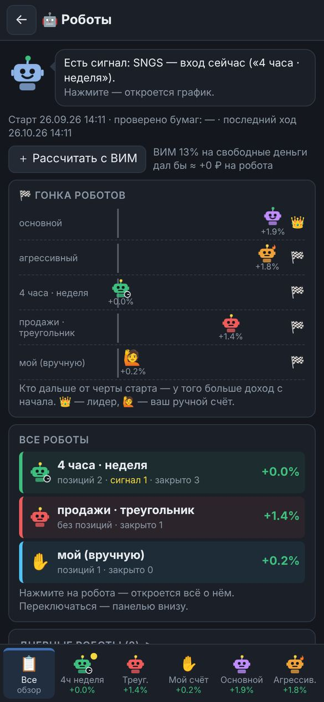
Экран одного робота
Нажмите на робота в панели внизу. Сверху — его деньги, ниже — сигнал, если он есть, открытые позиции и закрытые сделки.
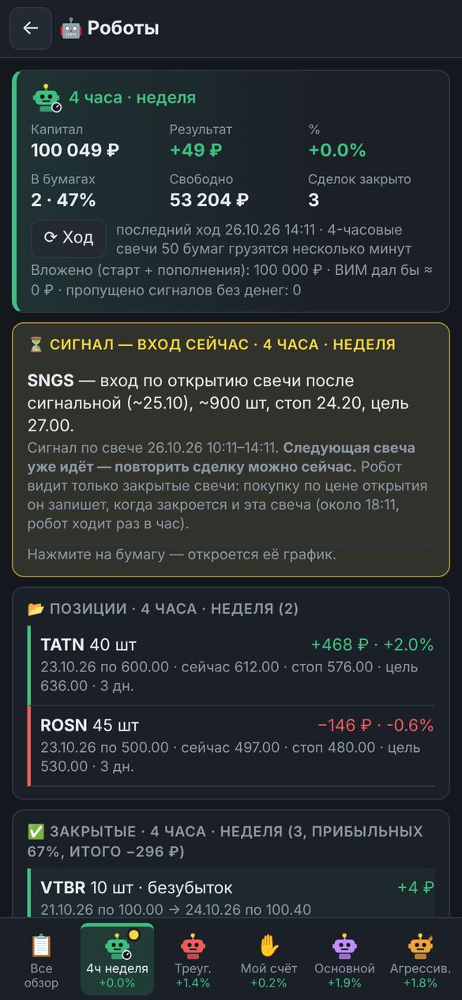
Правила робота «4 часа · неделя», по порядку
- Ищет начало волны 3: волны 0-1-2 видны, откат закончился. Берёт только самый вероятный подсчёт.
- Проверяет фильтры: рынок в целом растёт; средняя цена за 200 свечей растёт; индикатор AO показывает рост. Что-то не так — сигнала нет.
- Покупает по открытию следующей свечи и сразу ставит стоп и цель. Стоп — цена, где подсчёт сломан. Цель — где обычно кончается волна 3. Чтобы повторить сделку вручную, у вас есть время до закрытия этой свечи: таймер ⏱ показан в карточке сигнала, в уведомлении и в виджете. На истории вход в течение этой свечи почти не хуже, чем точно по открытию; ждать дольше — хуже.
- Сколько купить, считает от стопа: если сработает стоп, счёт уменьшится на 1,5%. Эту сумму называют «1 R». И не больше четверти счёта в одну бумагу.
- Безубыток: цена ушла на три обычных хода свечи (3 × ATR) — стоп переносится на цену покупки.
- Пятница: сделка с прибылью остаётся на следующую неделю. Без прибыли — закрывается по открытию следующей свечи, если цена за неделю закрылась ниже нижней линии канала. Иначе тоже остаётся, со своим стопом.
Посмотрите настоящие сделки
Четыре сделки 2025 года на 4-часовых свечах, посчитанные тем же движком, что в приложении: удачная, со стопом, с пятничным выходом и продажа после треугольника. Переключайте вкладки над графиком. Нажмите на любую свечу — увидите её цены.
Робот «Охотник» (с версии 3.13)
«Охотник» не считает волны Эллиотта. Он ищет на 4-часовых свечах две классические фигуры, которые прошли проверку на истории, и торгует их по тем же правилам ведения сделки, что и «4 часа · неделя». Это дополнение сверх книги — отдельный робот, к остальным он не примешивается.
Фигура 1: перевёрнутая «голова и плечи»
Три минимума подряд на мелких волнах (порог разворота в 2,5 раза меньше обычного):
- Левое плечо — первый минимум.
- Голова — второй минимум, ниже плеча.
- Правое плечо — третий минимум, выше головы. Плечи — примерно на одной высоте (разница не больше трети глубины головы).
- Линия шеи — прямая через два максимума между ними.
Вход — когда свеча закрылась выше линии шеи (не позже 30 свечей после правого плеча). Стоп — чуть ниже правого плеча. Цель — линия шеи плюс глубина головы.
Смысл фигуры: продавцы в последний раз продавили цену (голова), но на следующей попытке уже не смогли дойти так низко (правое плечо), а потом цена пробила потолок (шею).
Фигура 2: пробой длинного уровня
Уровень — самое высокое закрытие за последние 500 свечей по 4 часа (около четырёх месяцев). Многие держали акцию и продавали у этого уровня — он работал как потолок.
Вход — первая свеча, закрывшаяся выше уровня. Стоп — под последним заметным минимумом перед пробоем. Цель — вдвое дальше стопа (2 R), дальше «бегунок».
Ложных пробоев много — больше половины кончаются стопом или около нуля. Зарабатывает фигура на немногих пробоях, которые идут далеко и долго.
Два робота на одном счёте
У «Охотника» один счёт и одни деньги, но внутри — два независимых «охотника»: один ищет голову и плечи, другой — пробои. Каждый ведёт свои сделки по своим правилам. Поэтому по одной бумаге могут быть открыты две сделки сразу — по одной от каждой фигуры. В журнале и уведомлениях у сделки подписано, по какой фигуре она открыта.
Почему не одним роботом? На истории так лучше: две фигуры в одном подсчёте мешают друг другу (одна занимает бумагу, и сигнал второй пропадает) — 27,7% в год против 30,7% у двух «охотников» на одном счёте.
Правила ведения — как у «4 часа · неделя»
- только покупки; фильтры: рынок растёт, средняя-200 растёт, AO показывает рост, тренд старшей степени не против;
- риск 1,5% счёта на сделку, не больше четверти счёта в одну бумагу;
- безубыток после 3 × ATR, после цели — «бегунок»;
- выход, если подсчёт волн развернулся вниз («смена подсчёта»);
- пятница: прибыльная сделка — на следующую неделю, без прибыли — закрыть по открытию следующей свечи, если пробит канал.
Каждое из этих правил проверено отдельно: без любого из них на истории хуже.
Посмотрите настоящие сделки «Охотника»
Четыре сделки 2025–2026 годов, посчитанные тем же движком, что в приложении: две по голове и плечам (Лента — удачная, Лукойл — стоп) и два пробоя (удачный и ложный). Голубым — фигура, как её увидел робот.
Как робот ведёт сделку
Здесь — всё, что обычно вызывает вопросы: почему стоп стоит именно там, почему линия на графике кончилась, а робот ещё в сделке, и что значат значки.
Стоп двигается ступеньками — по правилам, а не «на глаз»
- Сразу после покупки стоп стоит там, где подсчёт ломается (например, под началом волны 1 или под концом волны 2).
- Безубыток. Когда цена хотя бы хвостом свечи поднялась выше покупки на 3 обычных хода свечи (3 × ATR), а сама свеча закрылась выше цены покупки, — после её закрытия стоп переезжает на цену покупки (чуть выше, чтобы покрыть комиссию). Бывает, что это случается уже на первой свече после покупки. Сделка уже не может принести убыток. У каждого робота это включается и выключается значком 🛡 в его «⚙ Настройках».
- «⏳ Сделка стоит» (с 3.14, только у 4-часовых роботов, включается в «⚙ Настройках» робота, по умолчанию выключено). Если за 12 свечей после покупки (2–3 торговых дня) цена ни разу не закрылась выше покупки, стоп переезжает на полпути к цене покупки — убыток, если сделка всё-таки уйдёт вниз, будет вдвое меньше. За свечу до этого придёт предупреждение «сделка стоит». На истории 2018–2026 доход тот же, а самая глубокая просадка меньше: у «4 часа · неделя» ~7% вместо ~9%, у «Охотника» ~6,8% вместо 7,2%. На дневках пользы нет — там кнопки нет.
- После цели («бегунок») робот не продаёт, а подтягивает стоп под каждый подтверждённый откат: под минимум свечи, которая ниже двух соседних слева и справа. Пока следующие свечи не подтвердили такой минимум, стоп стоит на месте.
Пример — IRAO, 4 часа. Робот купил, стоп был 2,4915. Цена ушла вверх — стоп переехал на 2,6465. Потом появился новый подтверждённый откат — стоп поднялся на 2,6752. Между этими шагами цена росла, а стоп стоял: это нормально.
Предупреждение заранее — со звуком
С версии 3.9 робот предупреждает за одну свечу до переноса стопа:
- «скоро безубыток» — до уровня 3 × ATR осталось меньше половины обычного хода свечи; если цена дойдёт до него — стоп уйдёт на цену покупки;
- «скоро перенос стопа» — после цели появилась свеча-кандидат в откат; если следующие свечи не уйдут ниже её минимума — стоп переедет туда.
Само предупреждение приходит один раз на каждый будущий перенос. Если появилась новая свеча-кандидат, а уровень почти тот же (разница меньше четверти риска сделки), второй раз робот не предупреждает (с версии 3.10). Когда стоп действительно перенесён, приходит второе уведомление: «стоп перенесён X → Y».
Линии на графике: бэктест и робот — разные вещи
На графике могут быть сделки двух видов:
- Сделки бэктеста (входы, стопы, выходы системы) — так система торговала бы на всей истории этой бумаги при текущем пороге. Бэктест каждый раз пересчитывается, и его сделка может уже «закончиться» на графике.
- Сделки роботов — настоящие ходы виртуальных счетов: робот начал в свой день, у него были свои деньги, и не каждый сигнал он брал. Поэтому робот может ещё держать бумагу, когда сделка бэктеста на графике уже закрыта, — и наоборот.
Отметка робота — фигура в его цвете у цены покупки и буква под ней: О — основной, А — агрессивный, Н — «4 часа · неделя», Т — треугольник, Ф — «Охотник» (фигуры), Б — биткоин, Я — ваш счёт («мой (вручную)»). Фигура вершиной вверх — покупка, вниз — продажа (шорт). От отметки открытой сделки пунктир идёт к цене последней свечи, рядом — пунктир стопа. Если стоп уже на цене покупки или выше, у него подпись «БУ». Закрытая сделка — пунктир до выхода: зелёный, если в плюсе, красный — в минусе. Фигуру и цвет можно поменять в «⚙ Настройках» робота.
Звёздочка «Я» стоит на свече и цене вашей настоящей покупки — приложение берёт их из истории операций у брокера (нужен токен).
Пятница у «4 часа · неделя»
На последней свече недели робот решает: прибыльную сделку — на следующую неделю (🧳, стоп в безубытке), без прибыли — закрыть по открытию следующей свечи, но только если за неделю цена закрывалась ниже нижней линии канала. Если канал цел — сделка тоже переносится, со своим стопом. Об этом приходит уведомление.
Риск на сделку — у каждого робота свой
С версии 3.9 риск робота не зависит от риска в ⚙ → «Счёт» (тот — для ваших планов на графике). Рекомендуемый: основной, «4 часа · неделя» и «Охотник» — 1,5%, агрессивный и треугольник — 1%. Поменять: экран робота → «⚙ Настройки» → «Риск на сделку» → «Сохранить». Перед сохранением приложение предупредит:
- на истории бывало до 15 убыточных подряд — при риске 3% это почти −40% счёта;
- выше 1,5–2% доход почти не растёт (позиции упираются в лимит четверти счёта), а у агрессивного выше 1% даже хуже;
- сравнение робота с историей и «Гонка роботов» станут нечестными;
- новый риск — только для новых сделок, открытые остаются как были.
Кнопка «Вернуть …%» ставит рекомендуемый. Каждая смена записывается в журнал.
Кнопка «⬆ Обновить настройки роботов»
Она не перезапускает роботов: деньги, сделки и история остаются. Робот просто начинает работать по новым правилам набора, а открытые сделки доводит по старым. Ваш свой риск и выключенный 🛡 кнопка не трогает.
Время — по Москве
Роботы всегда живут по московскому времени: свечи 4 часа закрываются в 03, 07, 11, 15, 19 и 23 часа по Москве, дневки — в полночь. На экране время тоже по Москве, с подписью «МСК», даже если вы в другом часовом поясе. Если удобнее время телефона — ⚙ → «Данные» → снимите галочку «Время по Москве (МСК)».
А если завтра решение ЦБ по ставке?
Роботы не смотрят на новости и календарь: сигнал есть — покупают, даже накануне заседания Банка России по ключевой ставке. Мы проверили, стоит ли пропускать такие дни: взяли все 76 заседаний 2018–2026 годов (решение объявляют в 13:30 по Москве) и выкинули входы рядом с ними.
- «4 часа · неделя»: сейчас ~23% в год. Без входов в день решения — 23,1%, накануне и в день — 22,6%, в день и на следующий — 24,2%, за два дня до — 22,0%. Скачет то вверх, то вниз в пределах обычного случайного разброса. Немного ниже только просадка (~7,5% вместо ~9%).
- «Охотник»: сейчас ~31%; с любым вариантом пропуска — 29–30,5%, первая половина истории хуже. Ему пропуск только вредит.
- Сделки, которые прожили через решение ЦБ, в среднем самые прибыльные — это длинные сделки, поймавшие движение. Закрываться перед заседанием тоже не нужно.
Вывод: пропускать дни заседаний не нужно — правило не добавлено. Неожиданные новости (санкции, заявления) заранее не знает никто — от них защищает стоп. Ниже — три настоящих входа робота рядом с заседаниями: удачный сразу после решения, удачный накануне и стоп накануне.
Общий счёт: разделить деньги между роботами
На экране «Роботы» (обзор «Все») есть карточка «🧺 Общий счёт»: отметьте роботов кнопками — увидите, сколько они заработали вместе, общий график и самую глубокую просадку общего счёта рядом с просадкой каждого.
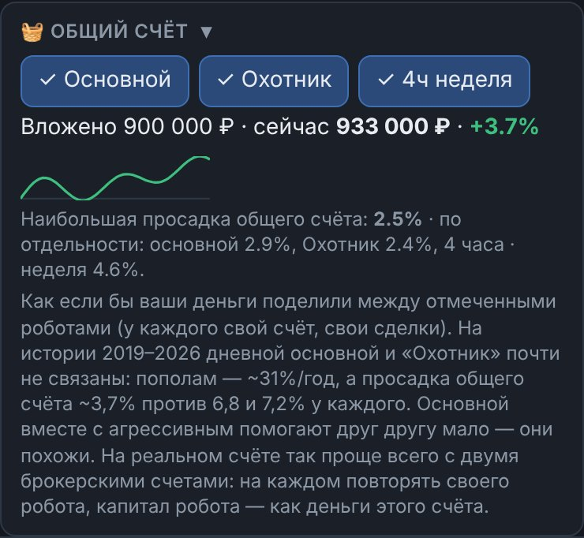
Каких роботов сложить и в каких долях, что получалось на истории и как сделать это на настоящих деньгах — в разделе 6 «Стратегия».
6 Стратегия: как поделить деньги между роботами
Один робот, даже хороший, иногда месяцами теряет. Самый сильный способ сделать счёт ровнее, который мы нашли на истории, — не новое правило, а несколько непохожих роботов, у каждого своя часть денег.
Зачем делить деньги
Просадка — это полоса стопов подряд. Если у двух роботов плохие месяцы приходятся на разное время, то, пока один теряет, второй часто зарабатывает, и общий счёт проседает намного меньше, чем каждый по отдельности.
- Дневной основной и «Охотник» почти не связаны: один держит сделки неделями на дневках, другой ловит фигуры на 4 часах.
- «Треугольник» продаёт, а остальные покупают — он ходит против них и чаще всего зарабатывает, когда покупки теряют.
- «4 часа · неделя» и «Охотник» похожи (оба на 4 часах, оба покупают на одном и том же рынке) — вместе выигрыш небольшой. Так же похожи основной и агрессивный.
Что получалось на истории
Проверка 2019 — середина 2026 года: у каждого робота своя доля денег и свои сделки, свободные деньги — в фонде денежного рынка, комиссия 0,05%. «Просадка» — самое глубокое падение счёта от прошлого максимума. Последняя колонка — доход в год в первой половине (2019–2022) и во второй (2023–2026): хороший вариант не должен держаться на одной из них.
| Как поделить | в год | просадка | 2019–22 / 2023–26 |
|---|---|---|---|
| только основной (дневки) | 27% | 6,8% | 19 / 38% |
| только «4 часа · неделя» | 26% | 9,2% | 17 / 37% |
| только «Охотник» | 34% | 7,2% | 24 / 46% |
| только «треугольник» | 14% | 2,2% | 10 / 19% |
| основной ½ + «Охотник» ½ | 31% | 3,7% | 22 / 43% |
| основной 40% + «Охотник» 40% + «треугольник» 20% | 28% | 2,2% | 20 / 38% |
| основной, «Охотник», «треугольник» по трети | 25% | 1,7% | 18 / 35% |
| основной ⅓ + «Охотник» ⅔ | 32% | 4,2% | 23 / 44% |
| основной, «Охотник», «неделя» по трети | 30% | 3,9% | 20 / 41% |
| «Охотник» ½ + «неделя» ½ | 30% | 5,8% | 21 / 42% |
| основной ½ + «неделя» ½ | 27% | 4,6% | 18 / 38% |
| все четыре по четверти | 26% | 2,7% | 18 / 36% |
Главное в таблице: у всех сочетаний просадка меньше, чем у любого робота в нём по отдельности, а доход — где-то между ними. Это держится при любых долях — значит, не случайность.
Три готовых варианта
- «Основа» — основной и «Охотник» пополам: ~31% в год, просадка ~3,7%. Больше всего дохода при маленькой просадке. Совет по умолчанию.
- «Ровнее» — основной 40%, «Охотник» 40%, «треугольник» 20%: ~28% в год, просадка ~2,2%. Немного меньше дохода, счёт почти не проседает.
- «Самый спокойный» — все трое по трети: ~25% в год, просадка ~1,7%. «Треугольник» торгует редко (~12 сделок в год), его доля почти всё время лежит в фонде — поэтому доход ниже.
Как посмотреть в приложении
Экран «Роботы» → обзор «Все» → карточка «🧺 Общий счёт». Отметьте кнопками роботов из своего варианта — карточка сложит их счета и покажет общую просадку рядом с просадкой каждого. Карточка складывает виртуальные счета как есть (у каждого робота свой стартовый капитал), поэтому доли получаются такие, какие у роботов деньги.
Как сделать на настоящих деньгах
- Отдельный брокерский счёт на каждого робота — у брокера их можно открыть несколько. Деньги делите по долям варианта, на каждом счёте повторяете сделки своего робота.
- Капитал робота = деньги его счёта. Тогда подсказка «купит ~N шт» в сигнале будет верной: размер сделки считается от денег своего счёта.
- Сумма. Чем меньше денег на счёте, тем чаще дорогие лоты не влезают в четверть счёта и сигналы пропускаются. Примерно от 200–300 тыс. ₽ на весь капитал это почти не мешает; при меньшей сумме лучше начать с одного-двух роботов.
- «Треугольник» продаёт бумаги, которых нет на счёте (шорт). Это нужно разрешить у брокера, и это платно: в расчёте взято 15% годовых за время удержания. Не все бумаги брокер даёт в шорт.
Честные оговорки
- Это история, а не обещание. Бывают годы хуже среднего — у всех роботов был слабый 2022 и боковик последнего года.
- Прибыль «треугольника» держится на немногих бумагах, а сделок у него мало — его цифры самые ненадёжные. Поэтому ему лучше 10–20% денег, не больше.
- Сначала стоит 1–2 месяца понаблюдать за роботами на виртуальных счетах и сравнить с таблицей, а уже потом решать, сколько денег кому дать.
- Роботы сами не торгуют на вашем счёте: сделки повторяете вы, по сигналам.
7 Наборы: какой выбрать
Набор — это готовые настройки, проверенные на истории 65 акций Мосбиржи: из каких свечей смотреть график, какие сигналы брать и какие фильтры включить. По каждому набору ходит свой робот. Ставить набор — в ⚙ → «Готовые» → «Поставить».
Покупки на дневных свечах. Спокойный: сделка держится 1–3 месяца, в среднем около 4 сигналов в месяц.
- Вход в начале волны 3, после коррекции A-B-C или после треугольника.
- Фильтры: индикатор AO, «средняя за 200 дней растёт», прибыль до цели минимум в 1,5 раза больше риска.
- Стоп переносится в безубыток, когда цена ушла на 3 обычных хода (3 × ATR).
Тоже покупки на дневках, но стоп ближе (под концом волны 2), а когда волна 3 подтвердилась — робот докупает ещё («доливка»). После цели не продаёт, а ведёт стоп за ценой.
Короткие покупки на 4-часовых свечах: сделка обычно 2–3 дня, около 12 сделок в месяц. Подробно разобран в разделе 5.
- Только вход в волну 3 и только от самого вероятного подсчёта.
- Пятничное правило: прибыльная — на следующую неделю, убыточная — закрыть в понедельник утром, если цена пробила линию канала.
Не волны, а две классические фигуры на 4-часовых свечах: перевёрнутая «голова и плечи» и пробой максимума за ~4 месяца. Два «охотника» на одном счёте, правила ведения — как у «4 часа · неделя». Около 10 сделок в месяц. Подробно — в разделе 5.
Только продажи (шорт): после завершённого треугольника, когда рынок в целом падает. Около 13 сделок в год, сделка обычно 3 дня.
Единственный робот не по волнам. Держит биткоин, пока дневная цена закрытия выше средней за 100 дней, иначе всё в долларах. Чем сильнее скачет цена, тем меньшую долю счёта он держит. Решение — раз в день в 03:00 по Москве.
Как выбрать
- Только начинаете — «Дневки · основной». Сигналов мало, сделки долгие, можно спокойно проверить каждый шаг по инструкции.
- Хочется чаще и тариф «Трейдер» — добавьте «4 часа · неделя». Сигналы приходят несколько раз в неделю, но за ними нужно следить в течение дня.
- Агрессивный, треугольник и биткоин — пусть сначала поработают роботы. Посмотрите месяц-два, как они ведут себя на ваших глазах.
8 Тренажёр: потренироваться на истории
Тренажёр возвращает вас в прошлое: будущее скрыто, свечи появляются одна за другой, как в настоящий день торгов. Вы покупаете и продаёте кнопками, а рядом торгует система по своим сигналам. Деньги учебные.
Откройте тренажёр
Под графиком нажмите кнопку Вид ▾ (со значком 🎓) и самую верхнюю строку — «Тренажёр — прокрутка истории».
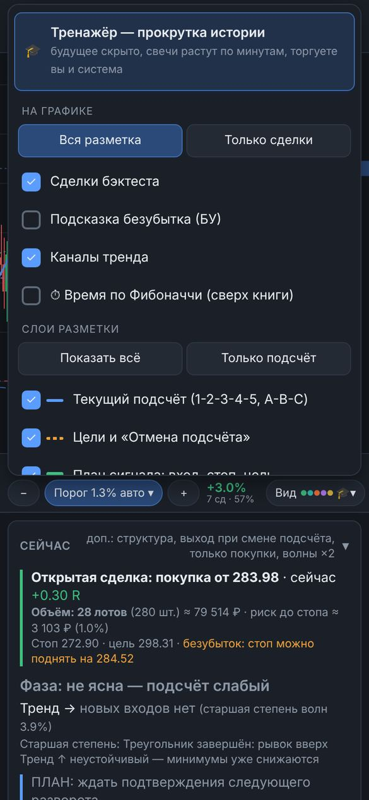
Выберите дату и набор
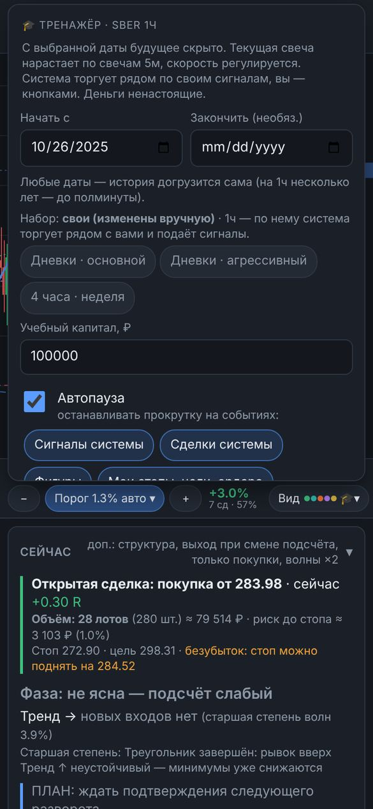
Играйте
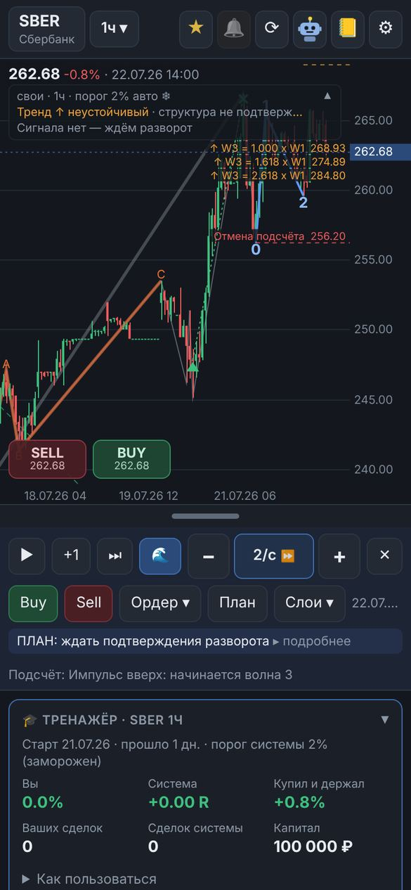
Когда вы купили, под кнопками появится ваша позиция:
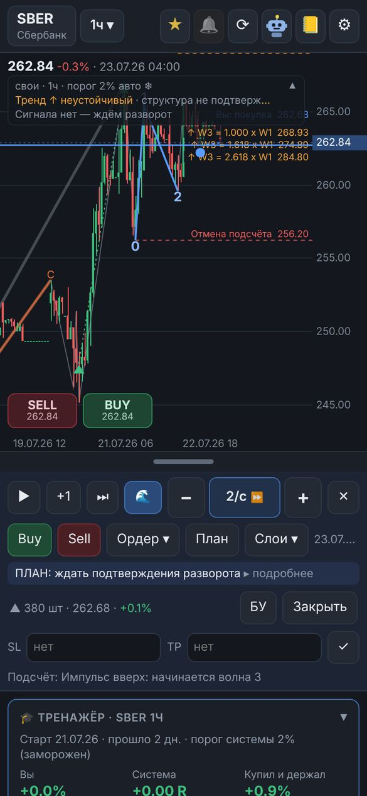
Как тренироваться с пользой
- Начните с дневок и набора «основной». Включите автопаузу.
- На каждой паузе спросите себя: какая сейчас волна? где был бы стоп? Потом нажмите «План» и сравните с системой.
- Ставьте стоп в каждой сделке — это первое правило.
- В конце сравните три цифры: вы, система и «купил и держал».
9 Мои сделки, оповещения, виджет
Как не пропустить сигнал и как вести свои настоящие сделки рядом с подсказками системы.
Оповещения по бумаге — кнопка 🔔
Откройте нужную бумагу и таймфрейм, нажмите 🔔 вверху и «+ Следить». Приложение будет само проверять эту бумагу и пришлёт уведомление, когда появится сигнал на вход, выход, сделка дойдёт до цели или стопа.
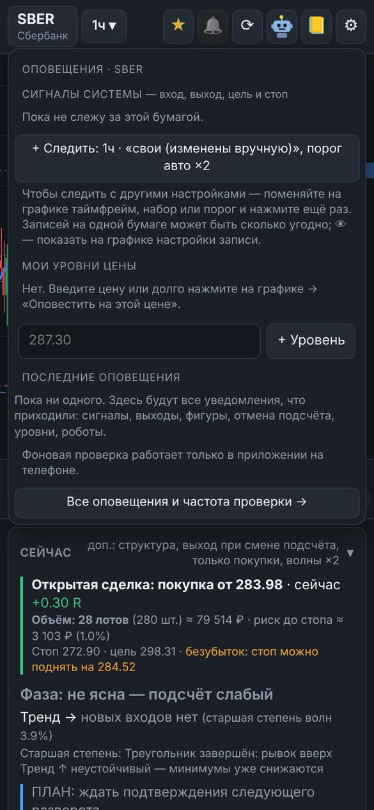
История оповещений
Все отправленные уведомления хранятся: внизу окна 🔔 и в ⚙ → «Сигналы» → «📨 История оповещений». Нажмите на любое — откроется график этой бумаги. Пригодится, если смахнули уведомление не глядя.
Мои сделки — кнопка 📒
Дневник ваших настоящих сделок. Если вставлен токен, покупки и продажи со счёта подтягиваются сами. Можно добавить сделку и вручную — кнопкой «+ Сделка» или долгим нажатием на графике → «моя покупка здесь».
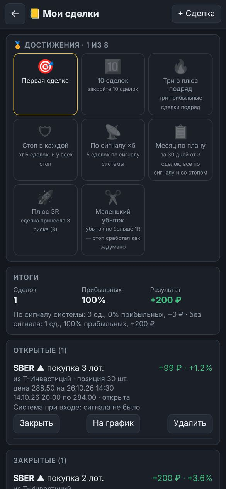
Виджет на главном экране телефона
- Долго нажмите на пустое место главного экрана Android → «Виджеты».
- Найдите «Волны Эллиотта» и перетащите виджет на экран.
- В нём — бумаги, за которыми вы следите через 🔔, и роботы. Сверху — где сейчас сигнал ▲, потом роботы, потом остальные. Список листается.
- Нажмите на строку — откроется график этой бумаги. 🎉 или 😢 у робота — его сделка за последние два дня закрылась в плюс или в минус.
- ⏱ под строкой — у бумаги или робота есть свежий сигнал: сколько осталось до закрытия свечи, за которую нужно успеть войти. Таймер идёт сам и пропадает, когда свеча закрылась.
Сканер бумаг — подробно
Сканер за минуту проверяет сразу много акций с теми настройками, которые сейчас стоят на графике, и отвечает на три вопроса: где сигнал прямо сейчас, в какой фазе каждая бумага и как эти настройки торговали бы на всех бумагах сразу. Сам сканер ничего не покупает и роботов не меняет.
Где он находится
Нажмите на название бумаги вверху главного экрана (например, «SBER»). Откроется окно «Бумага» — справа вверху кнопка Сканер. В этом же окне, в разделе «Сигналы сканера», после первого скана появятся бумаги, где сейчас есть сигнал.
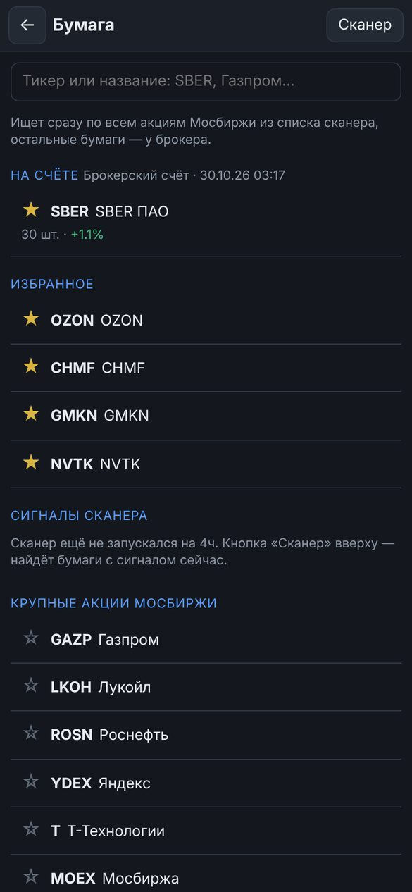
Перед запуском: что и как проверять
Важно: сканер берёт таймфрейм и настройки с графика. Хотите проверить набор «4 часа · неделя» — сначала поставьте его (⚙ → «Готовые»), потом открывайте сканер. Вверху окна написано, какой таймфрейм сейчас.
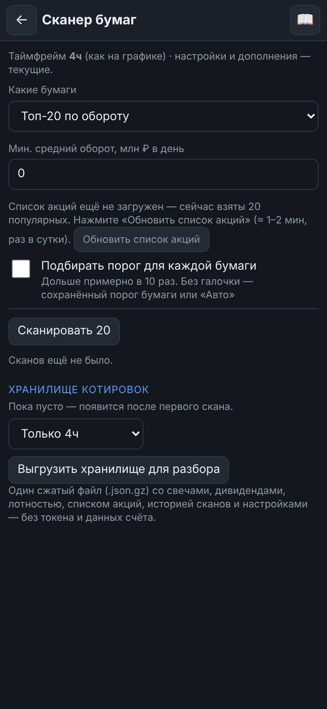
- Какие бумаги. Для начала — «Топ-20 по обороту». Роботы торгуют топ-50 с оборотом от 50 млн ₽ в день — чтобы видеть то же, что они, поставьте «Топ-50» и 50.
- Подбирать порог — для каждой бумаги ищется «лучший» порог разворота на её истории. Это подгонка под прошлое: цифры получаются красивее, чем будут. Без галочки берётся сохранённый порог бумаги или «Авто» — так честнее.
- Без токена брокера свечи и список акций берутся с Мосбиржи (задержка ~15 минут) — сканер работает так же.
Идёт проверка
Нажмите «Сканировать N». Рядом бежит счётчик «19/20: OZON» — какая бумага сейчас. Двадцать бумаг на 4 часах — меньше минуты, сто — несколько минут. Свечи сохраняются в телефоне, второй скан идёт быстрее.
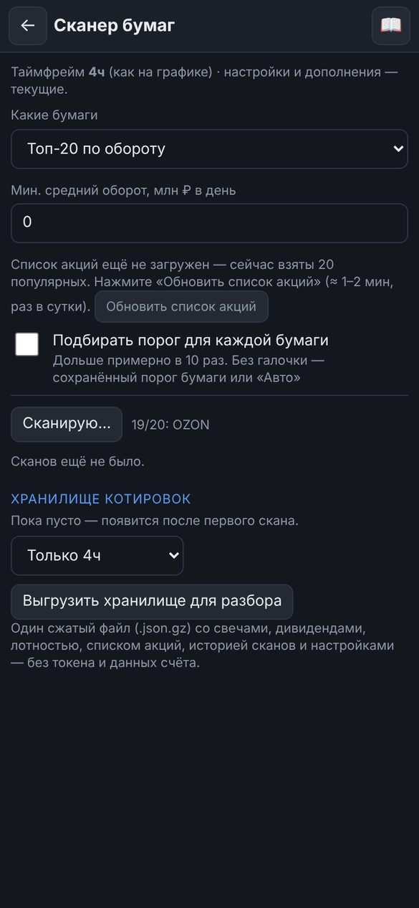
Табель настроек — главное, ради чего стоит сканировать
Сверху результата — табель: как текущие настройки торговали бы на всех проверенных бумагах. Это честнее, чем смотреть одну бумагу: на одной что угодно может «повезти».
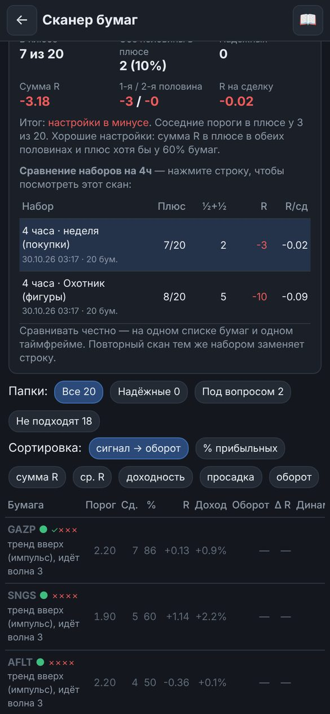
- «Хорошие» настройки — сумма R в плюсе в обеих половинах истории и плюс хотя бы у 60% бумаг. Тогда итог зелёный: «настройки выглядят устойчиво».
- Сравнение наборов — поставьте один набор, просканируйте, поставьте другой, просканируйте ещё раз: в табеле появятся обе строки рядом. На картинке — «4 часа · неделя» и «Охотник» на одних и тех же 20 бумагах. Сравнивайте только на одном списке бумаг и одном таймфрейме.
- Не пугайтесь минуса. Сканер смотрит только недавнюю историю, которая есть в телефоне (на 4 часах — около полутора-двух лет, на дневках — несколько лет), и только 20–50 бумаг. Проверки в разделе 11 — это 65 бумаг за 2018–2026 с учётом денег на счёте. Если сканер показывает минус за последний год — это значит «сейчас для этих настроек трудный рынок», а не «система сломалась».
Таблица бумаг: что значит каждая колонка
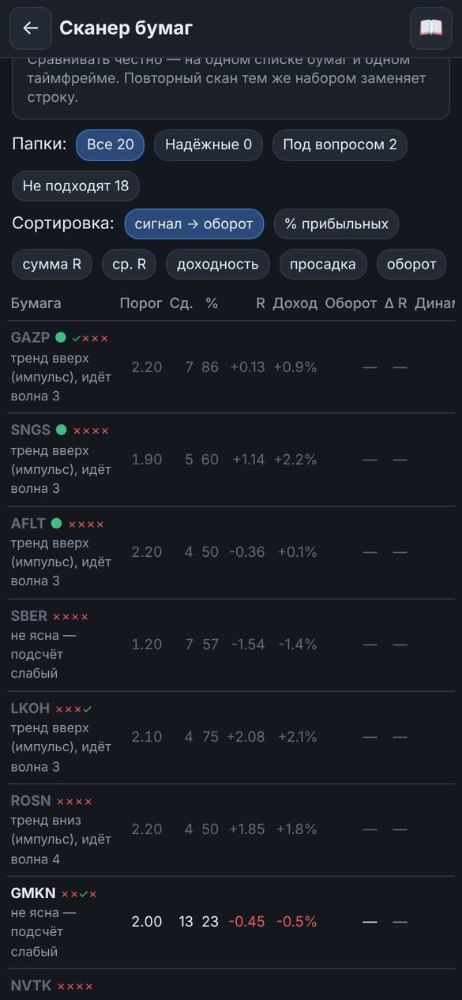
- Сортировка по умолчанию — «сигнал → оборот»: сверху бумаги с сигналом, среди них — самые торгуемые. Так же выбирает и робот, когда денег на все сигналы не хватает. Другие кнопки сортируют по доле прибыльных, сумме R, R на сделку, доходу, просадке, обороту.
- Таблица широкая — проведите пальцем влево, чтобы увидеть правые колонки.
- Δ R — насколько сумма R бумаги изменилась с прошлого скана этим же набором (▲ — выросла, ▼ — упала). «Динамика» — маленький график суммы R по всем сканам: видно, улучшается бумага или портится. Чтобы эти колонки ожили, сканируйте тем же набором, например, раз в неделю.
- «мало свечей» вместо цифр — у бумаги короткая история (новая на бирже), её пропускаем.
Проверки ✓✗ и папки — справка, а не совет
У каждой бумаги — четыре значка по порядку:
- ½ — обе половины истории в плюсе;
- ± — с порогом на 20–25% меньше и больше тоже в плюсе (результат не держится на одном «удачном» пороге);
- 8 — сделок не меньше восьми;
- ★ — в плюсе даже без самой удачной сделки.
Все четыре ✓ — папка «Надёжные», два-три — «Под вопросом», ноль-один — «Не подходят».
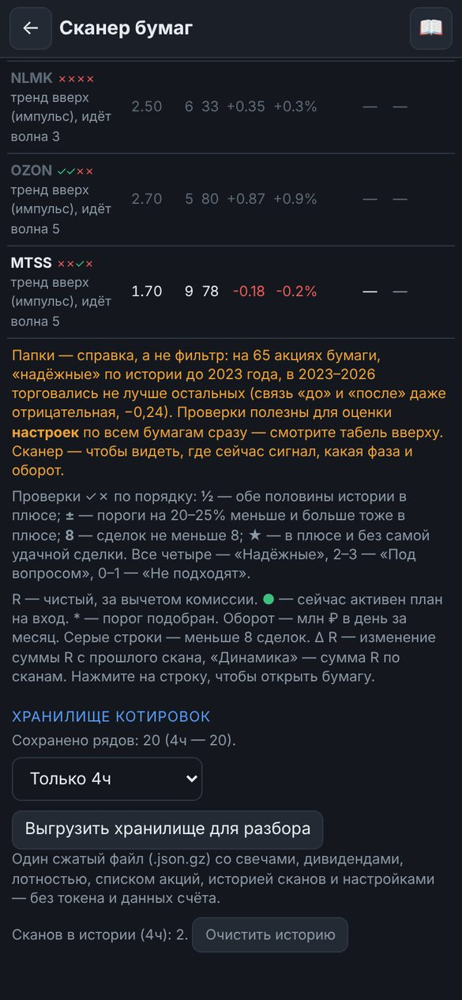
Нажмите на строку — откроется график
Нажатие на любую бумагу в таблице закрывает сканер и открывает её график с теми же настройками. Там видно сигнал целиком: подсчёт волн, вход, стоп, цель и план в панели «Сейчас». Если была галочка «Подбирать порог», бумага откроется с найденным порогом (он сохранится для неё).
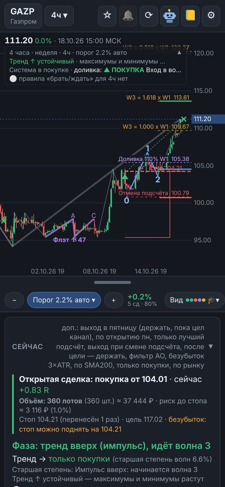
Как пользоваться сканером на практике
- Утром или вечером — «Топ-50», набор вашего робота, «Сканировать». Сверху — бумаги с зелёной точкой: там сигнал. Откройте каждую, посмотрите подсчёт глазами.
- Раз в неделю — тот же скан, чтобы ожили «Δ R» и «Динамика».
- Хотите сравнить наборы — один и тот же список бумаг, по очереди разные наборы, смотрите строку «Сравнение наборов» в табеле: плюс у скольких бумаг, обе половины, R на сделку.
- Не следите за всем сразу: интересные бумаги добавьте в избранное ★ и включите 🔔 «Следить» — приложение само пришлёт сигнал.
- Хранилище → «Выгрузить хранилище для разбора» — один файл со свечами и историей сканов. Его можно прислать разработчику для проверки на истории; токена и данных счёта в нём нет.
10 Настройки
Кнопка ⚙. Пять вкладок. Если не знаете, что менять, — ничего не меняйте: готовый набор уже всё настроил.
«Готовые» — наборы
Описаны в разделе 7. Внизу вкладки — «Как по книге» (без дополнений) и «Мои настройки»: можно сохранить свои и спокойно пробовать готовые.
«Анализ» — правила подсчёта и дополнения
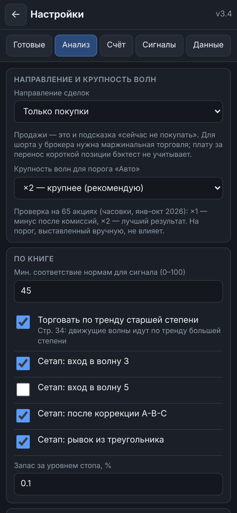
Ниже — «Дополнения»: всё, что сверх основных правил волн (фильтры AO и средней-200, безубыток, пятничный выход, доливка). По умолчанию выключены, готовые наборы включают проверенные. Под каждой галочкой написано, что она делает и что показала проверка на истории.
«Счёт» — токен, капитал, риск
- Токен — см. «Быстрый старт», шаг 2.
- Капитал для расчёта — от него приложение считает, сколько акций брать. Кнопка «Взять с брокерского счёта» подставит сумму с вашего счёта.
- Риск на сделку — сколько процентов счёта вы готовы потерять, если сработает стоп. Обычно 1%.
- Комиссия брокера — учитывается в результатах.
«Сигналы» — уведомления
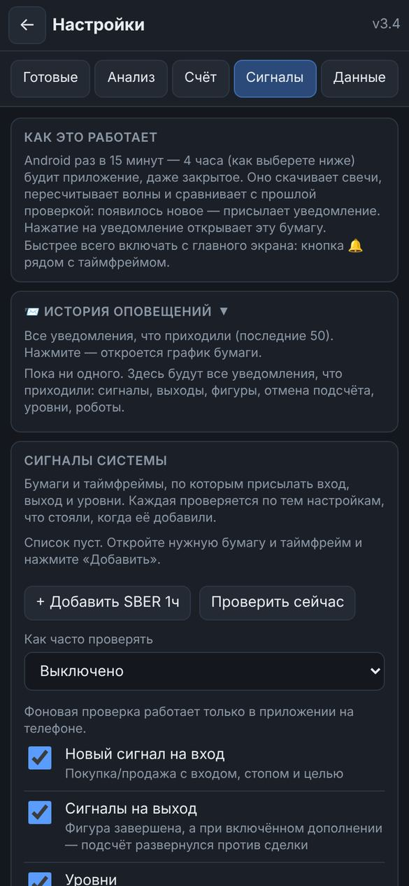
«Данные» — оформление и журнал
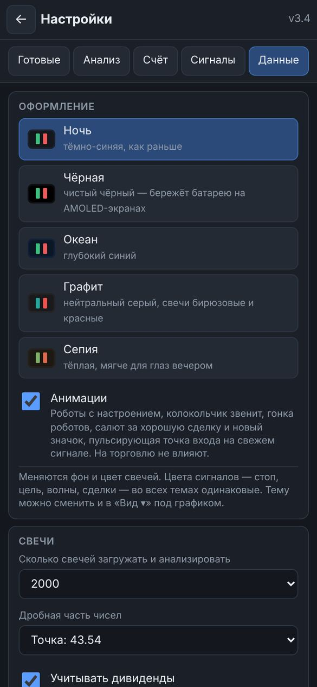
Ниже на этой вкладке — журнал работы: приложение записывает ошибки, проверки и сигналы (без токена, номеров счетов и сумм). Если что-то пошло не так — «Выгрузить лог» и пришлите файл разработчику. И «О приложении» — номер версии.
11 Что проверено на истории
Каждое дополнительное правило сначала проверялось на прошлом: на 65 самых торгуемых акциях Мосбиржи за 2018–2026 годы. В наборы попало только то, что прошло проверку. Ниже — что прошло, что нет и что это значит.
Как проверяли
- Один общий счёт, как у робота: риск на сделку 1%, в одну бумагу не больше четверти счёта, свободные деньги лежат в фонде денежного рынка.
- Обе половины истории. Правило должно помогать и до 2022–2023 года, и после. Если помогает только в одной половине — скорее всего, это случайность.
- Соседние значения. Если «3 × ATR» хорошо, а 2,5 и 3,5 плохо — правило не устойчиво.
- Не только доход: ещё самая глубокая просадка счёта и самая длинная серия убыточных сделок подряд.
- Прибыль не от пары бумаг. Если без пяти лучших акций всё пропадает — правило не принимаем.
✓ Прошло — включено в наборы
✗ Не прошло — не используется
12 Проверь себя — вопросы на настоящих графиках
Восемь вопросов. Каждый — на настоящем графике, в тот момент, когда нужно принять решение. Выберите ответ, а потом посмотрите, что было дальше.
13 Частые вопросы
Приложение само покупает акции на моём счёте?
Нет. Роботы торгуют только виртуальными деньгами. Токен «только для чтения» не позволяет ни купить, ни продать, ни вывести деньги. Если хотите повторить сделку робота — делайте это сами в приложении брокера.
Нужен ли токен брокера?
Нет. Без токена цены идут с сайта Мосбиржи с задержкой ~15 минут — для обучения, роботов и сигналов этого достаточно. С токеном цены без задержки и виден ваш настоящий счёт.
Сигнал пришёл, а я увидел его через час. Ещё можно входить?
Для дневок — да, разница обычно маленькая. Для 4-часовых свечей — если цена ушла недалеко от цены входа и ещё выше стопа. Если цена уже у цели или ниже стопа — пропустите: сигналов будет ещё много.
Почему подсчёт волн поменялся?
Новые свечи не вписались в прежнюю разметку. Это нормальная работа с волнами — так делает и человек, размечая волны вручную. Поэтому у каждой сделки есть стоп. См. раздел 3.
Почему у меня цена на графике не такая, как в приложении брокера?
На дневках цены поправлены на дивиденды: всё до дня выплаты уменьшено на её размер. Так день отсечки не выглядит падением. Выключить: ⚙ → «Данные» → «Учитывать дивиденды».
Робот объявил сигнал, но не купил. Почему?
Чаще всего у робота не хватило свободных денег: они заняты в открытых сделках. Ещё бывает, что цена открылась сразу за стопом или целью. Причина записывается в ленту «Что делали роботы».
Почему серия убытков — это нормально?
Прибыльна примерно каждая вторая сделка. Убыточные маленькие (1 R), прибыльные бывают по 2–5 R. На истории у основного набора бывало до 8 убыточных подряд, у агрессивного — до 13. Главное — не повышать риск, чтобы «отыграться».
Сколько денег нужно?
Чем больше, тем точнее работает расчёт количества акций. Со счётом около 10 000 ₽ многие лоты дороже четверти счёта, и сделок почти не будет. Комфортно — от 100 000 ₽.
Уведомления не приходят, когда приложение закрыто
Проверьте: ⚙ → «Сигналы» → частота проверки не «Выключено»; в настройках Android для «Волн Эллиотта» отключена экономия батареи и разрешены уведомления. На вкладке «Сигналы» видно, когда была последняя фоновая проверка.
Что такое «мой (вручную)» среди роботов?
Это зеркало вашего настоящего счёта у брокера (нужен токен): какие акции лежат на счёте и какой результат. Его можно сравнить с роботами в «Гонке роботов».
Пополнения и выводы денег прибылью и убытком не считаются: приложение берёт их из операций брокера и добавляет во «Вложено». Плата за обслуживание счёта, комиссии и налог — это настоящие расходы, они уменьшают результат; дивиденды и купоны — увеличивают. С версии 3.10 они показаны отдельной строкой: «В результате уже учтено: обслуживание −… ₽». В «Закрытых» — только сделки с того дня, как счёт начал повторять ваш настоящий портфель.
Почему робот не поставил безубыток, хотя цена хорошо ушла вверх?
Безубыток робота — по правилу: цена должна подняться выше покупки на 3 × ATR (хвост свечи тоже считается), а свеча — закрыться выше цены покупки. Робот видит только закрытые свечи, поэтому стоп переезжает после закрытия свечи. Если до 3 × ATR цена не дошла, безубытка нет, даже если прибыль «на глаз» уже приличная. За свечу до этого придёт «скоро безубыток». См. раздел 5, «Как робот ведёт сделку».
Почему стоп не подтягивается за каждой свечой?
После цели стоп переезжает только под подтверждённый откат — так проверено на истории: частый перенос выбивает из лучших сделок. См. раздел 5.
На графике сделка закончилась, а робот её ещё держит
Линии системы на графике — бэктест по всей истории, а робот торгует с дня своего старта и на свои деньги. Это разные сделки. Отметки робота — фигуры в его цвете с буквой. См. раздел 5.
Я в другом часовом поясе — время на графике сбилось?
Нет: с версии 3.9 время на экране по Москве, с подписью «МСК». Роботы всегда работают по Москве. Время телефона можно включить в ⚙ → «Данные».
Что такое порог и какой ставить?
Порог решает, какие развороты цены считать волной. Оставьте «Авто» — по нему проверены наборы и работают роботы. См. «Порог разворота» в разделе 3.
Как обновить приложение и не потерять данные?
Просто установите новый файл APK поверх старого. Не удаляйте приложение перед установкой — вместе с ним удалятся роботы, дневник и настройки.
Что-то сломалось. Что прислать разработчику?
⚙ → «Данные» → «Выгрузить лог». В файле нет токена и номеров счетов. В нём есть ход роботов, ваши записи в «Моих сделках» и суммы в рублях — пересылайте его только тому, кому доверяете.
14 Словарь
- Акция, бумага
- Доля компании. На Мосбирже у каждой есть короткое имя — тикер: SBER (Сбербанк), LKOH (Лукойл).
- Лот
- Сколько акций продаётся одной покупкой. У Сбербанка лот — 10 акций.
- Свеча
- Цена за отрезок времени: открытие, максимум, минимум, закрытие. См. раздел 2.
- Таймфрейм
- Из каких свечей график: 1 час, 4 часа, день.
- Дневки
- График из дневных свечей.
- Волна, подсчёт
- Отрезок движения цены между разворотами и номера, которые им дала программа: 1-2-3-4-5, A-B-C.
- Импульс
- Пять волн по направлению движения: 1, 3, 5 — вперёд, 2 и 4 — откаты.
- Коррекция
- Движение против импульса, обычно из трёх волн A-B-C.
- Зигзаг, флэт
- Виды коррекции: зигзаг — резкий откат, флэт — боковой.
- Треугольник
- Боковая фигура из пяти волн A-B-C-D-E, каждая короче предыдущей. После неё — рывок туда, куда шла цена до треугольника.
- Клин
- Пять волн, которые «наползают» друг на друга. Обычно в конце движения.
- Старшая степень
- Более крупные волны, внутри которых идут текущие. Роботы торгуют только по их направлению.
- Порог
- Насколько крупные развороты считать волнами. «Авто» подбирает сам. См. «Порог разворота» в разделе 3.
- Сигнал
- Момент, когда система готова войти в сделку: есть подсчёт и все фильтры пропустили.
- Стоп (SL)
- Цена, при которой сделка закрывается с убытком: здесь подсчёт сломан.
- Цель (TP)
- Цена, где обычно кончается волна.
- R, риск
- Сколько денег теряется, если сработал стоп. «+2 R» — заработали вдвое больше, чем рисковали.
- Прибыль/риск
- Во сколько раз расстояние до цели больше расстояния до стопа.
- Безубыток (БУ)
- Стоп переносится на цену покупки: сделка уже не принесёт убытка.
- Бегунок
- После цели сделка не закрывается, а стоп подтягивается за ценой.
- Доливка
- Докупить к прибыльной позиции, когда волна 3 подтвердилась.
- ATR
- Средний размах свечи за последние 14 свечей — «обычный ход» цены.
- AO
- Индикатор Билла Вильямса: выше нуля — цена в последнее время растёт быстрее, чем раньше.
- SMA200, средняя
- Средняя цена закрытия за 200 последних свечей. Растёт — долгий тренд вверх.
- Канал
- Линия через начало волны 1 и конец волны 2 (и параллельная ей). Пока волна 3 идёт как надо, цена выше нижней линии.
- Шорт
- Продажа акций, взятых у брокера взаймы, чтобы потом откупить дешевле. Заработок на падении.
- Комиссия
- Плата брокеру за каждую покупку и продажу. «Трейдер» — 0,05%, «Инвестор» — 0,3%.
- Просадка
- Насколько счёт опускался от своего максимума до минимума.
- Серия убыточных
- Сколько убыточных сделок подряд было на истории.
- Бэктест
- Проверка правил на прошлых ценах: что было бы, если бы система торговала тогда.
- Фонд денежного рынка
- Почти вклад, но на бирже: в него кладут деньги, не занятые в сделках.
- Токен
- Ключ, по которому приложение получает данные у брокера. Нужен «только для чтения».
- Робот
- Виртуальный счёт, который торгует по набору правил воображаемыми деньгами.
- Набор
- Готовые проверенные настройки. См. раздел 7.
★ Что нового в версиях 3 и 4
- 4.0 — в инструкции новый раздел 6 «Стратегия»: как поделить деньги между роботами — таблица вариантов на истории, три готовых варианта, как сделать на настоящих деньгах; в карточке «🧺 Общий счёт» — кнопка 📖 к этому разделу.
- 3.15 — в инструкции картинка «Общий счёт» больше не вылезает за край экрана.
- 3.14 — на экране «Роботы» карточка «🧺 Общий счёт»: сколько заработали отмеченные роботы вместе и какая просадка у общего счёта (раздел 5, шаг 9); у 4-часовых роботов опция «⏳ Сделка стоит» — 12 свечей без роста, стоп на полпути к входу (раздел 5, «Как робот ведёт сделку»); в «Что проверено» — свечные фигуры и правила против просадки.
- 3.13 — новый робот «Охотник»: ищет на 4-часовых свечах перевёрнутую «голову и плечи» и пробой длинного уровня, два «охотника» на одном счёте, правила ведения — как у «4 часа · неделя» (раздел 5); набор «4 часа · Охотник (фигуры)» во вкладке «Готовые»; в инструкции — сделки «Охотника» на настоящих графиках, подробный раздел про сканер и «А если завтра решение ЦБ по ставке?» с настоящими входами.
- 3.12 — приложение ставится на новые телефоны (Android 14–15): защита Google больше не блокирует его как «для старой версии Android». При первом запуске приложение спросит разрешение на уведомления — нажмите «Разрешить».
- 3.11 — таймер есть и у сигналов робота, записанных до обновления; у дневного робота — таймер до конца торгов дня входа.
- 3.10 — таймер до закрытия свечи у сигнала: в панели «Сейчас», в карточке сигнала робота, в уведомлении и в виджете; «мой (вручную)»: пополнения и выводы любым способом (карта, СБП, перевод) больше не выглядят прибылью, обслуживание, комиссии, налог и дивиденды — отдельной строкой, в «Закрытых» только сделки с начала сверки; виджет обновляется и после хода роботов в приложении; предупреждение «скоро перенос стопа» не повторяется, если уровень почти тот же; в инструкции — графики и картинки можно приближать, «Порог и риск», убраны ссылки «по книге».
- 3.9 — у каждого робота свой риск на сделку (с предупреждением); предупреждение со звуком за свечу до переноса стопа; «Обновить настройки роботов» больше не включает 🛡 сам; на графике «БУ» у стопа, пунктир открытой сделки идёт к последней свече, звёздочка «Я» — на свече настоящей покупки; время по Москве с подписью «МСК»; в тренажёре можно менять порог; журнал подробнее (сделки роботов, «Мои сделки», сводка роботов в выгрузке); в инструкции — «Порог разворота» и «Как робот ведёт сделку».
- 3.8 — эта инструкция внутри приложения: ⚙ Настройки → «📖 Инструкция», а кнопки 📖 на экранах «Роботы», «Мои сделки», «Сканер», в тренажёре и внизу панели «Сейчас» открывают нужный раздел.
- 3.7 — проверка кода: два хода робота больше не мешают друг другу, робот «Биткоин» не пропускает решение за день, одна бумага без свечей не останавливает проверку уровней цены; в программе для компьютера — галочка автозапуска и выключение Windows.
- 3.6 — программа для Windows и перенос данных между телефоном и компьютером файлом.
- 3.5 — исправлено: на экране «Роботы» нажатие на бумагу снова открывает её график.
- 3.4 — экран «Роботы» переделан: панель роботов внизу, обзор «Все», у каждого робота свой экран в его цвете.
- 3.3 — работа без токена: цены с сайта Мосбиржи. Если сервер брокера не отвечает, приложение само переходит на Мосбиржу.
- 3.2 — робот «Биткоин · тренд» и график биткоина.
- 3.1 — риск 1,5% на сделку у роботов «основной» и «4 часа · неделя».
- 3.0 — новое пятничное правило «4 часа · неделя» (канал, выход в понедельник, лучший подсчёт), безубыток в основном наборе, робот «продажи по треугольнику», «мой (вручную)» повторяет настоящий счёт.